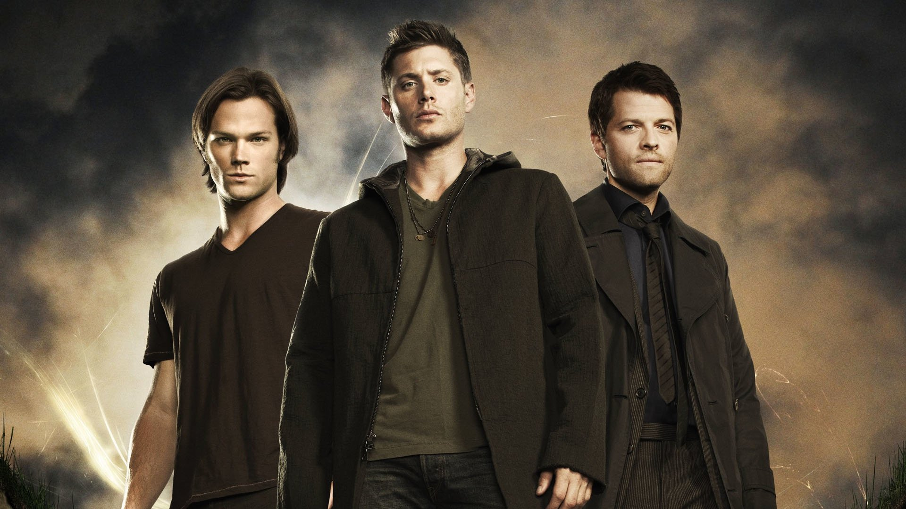
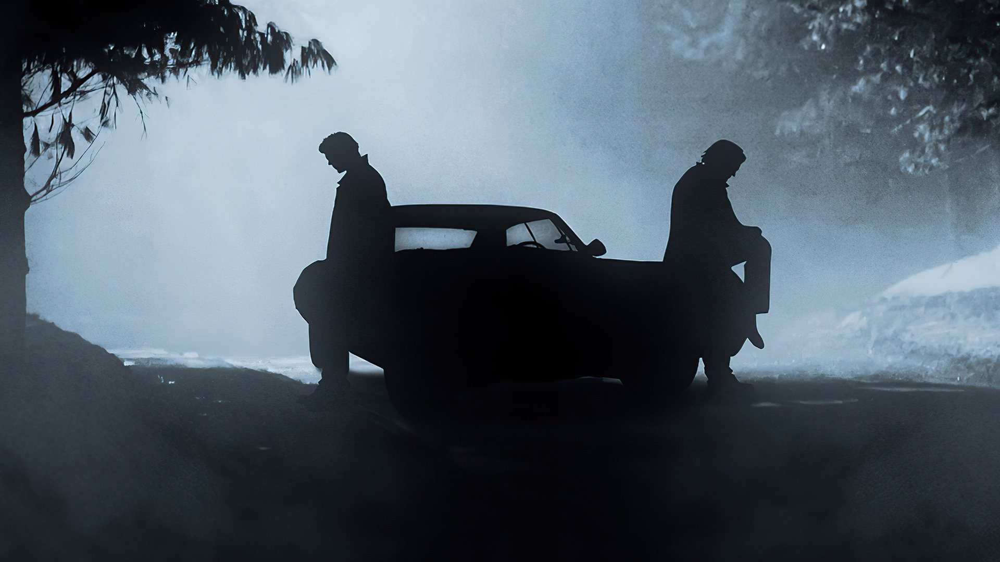
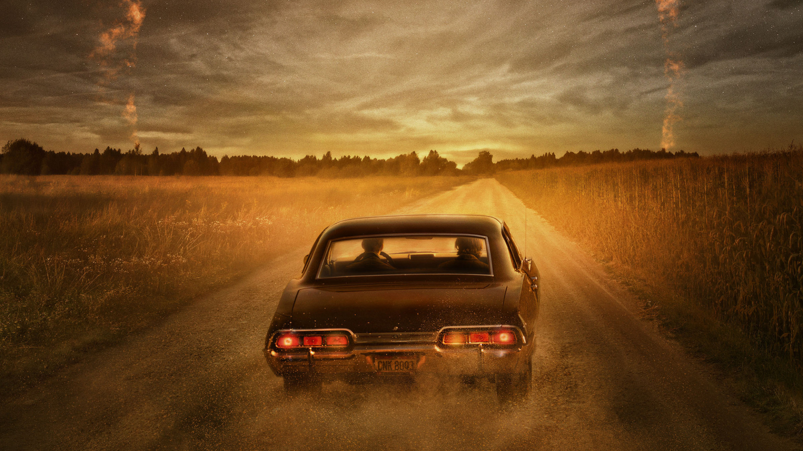
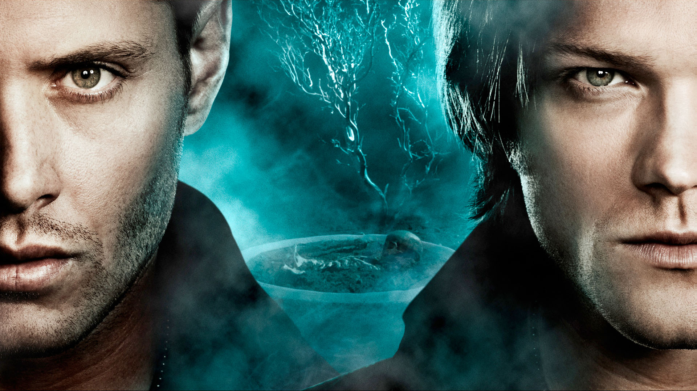
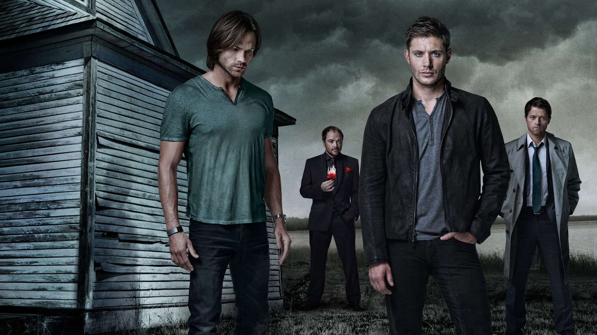
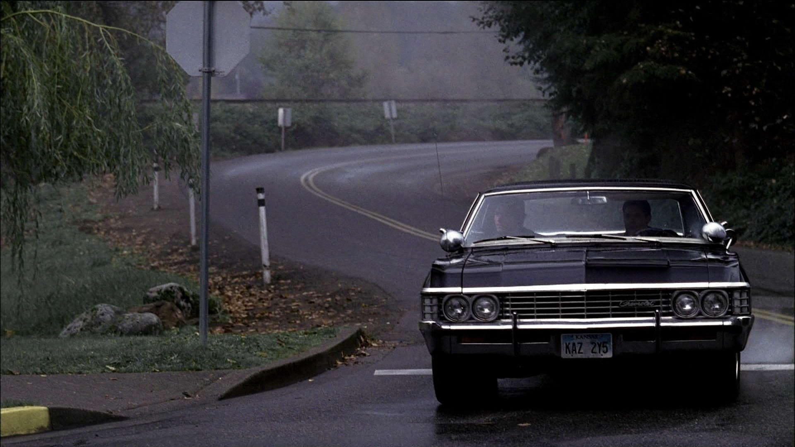

A série segue os irmãos Sam Winchester e Dean Winchester que viajam por toda a América em um Chevrolet Impala 1967 preto investigando e combatendo eventos paranormais e outras ocorrências inexplicáveis, muitas delas baseadas em lendas urbanas americanas e folclore, assim como diferentes criaturas sobrenaturais.